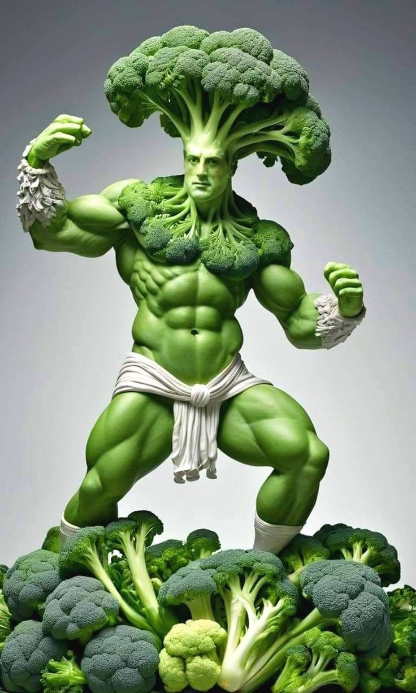

Cada xᵢ = quantidade em porções de 100g do alimento i consumida por dia:
| Alimento | Custo (R$) | Prot. (g) | Carb. (g) | Gord. (g) | Fibra (g) | Cálcio (mg) |
|---|---|---|---|---|---|---|
| Arroz | 0,40 | 2,6 | 28,0 | 0,3 | 0,4 | 10 |
| Feijão | 0,70 | 8,7 | 14,0 | 0,5 | 8,5 | 37 |
| Frango | 1,20 | 21,0 | 0,0 | 3,0 | 0,0 | 11 |
| Ovo | 0,60 | 13,0 | 1,0 | 10,0 | 0,0 | 50 |
| Brócolis | 0,50 | 2,8 | 7,0 | 0,4 | 2,6 | 47 |